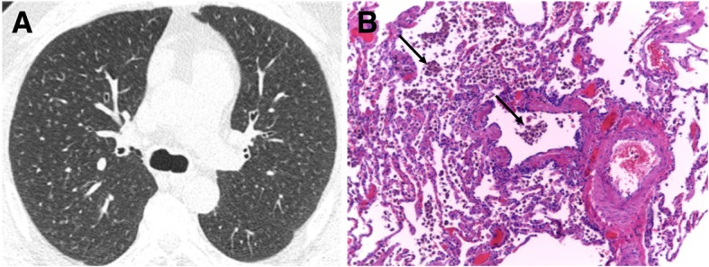
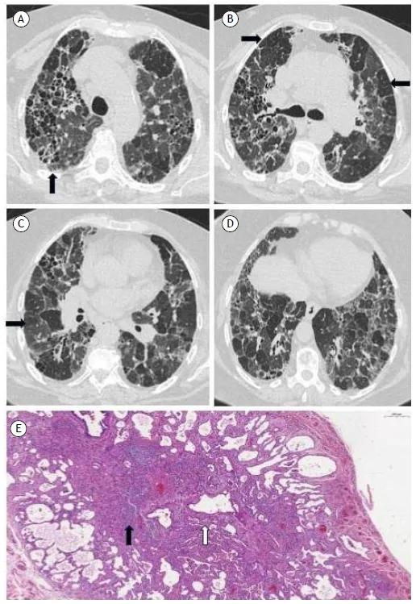
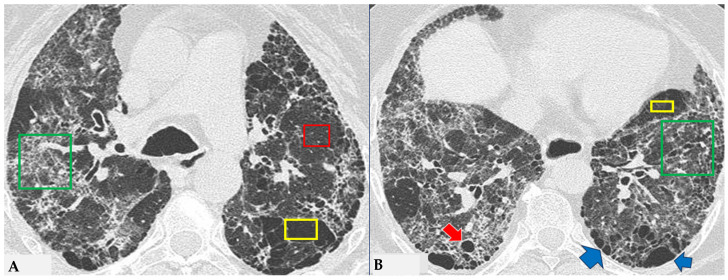
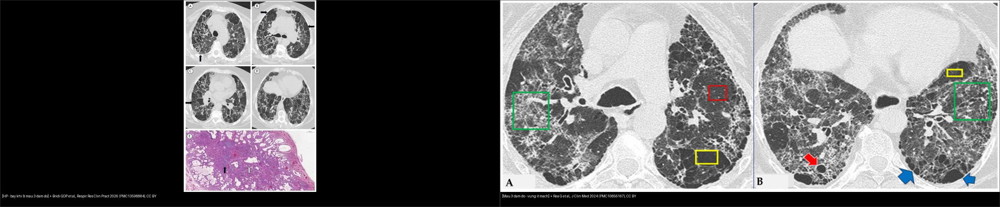

051 — Tiểu phế quản & khảm tưới máu / Small airways & Mosaic attenuation
Tags: pattern:tieu-phe-quan vung:duong-tho protocol:HRCT-tho-ra
Mức chắc chắn (certainty): tổng hợp y văn (literature synthesis) — nhóm tự biên từ y văn mở, chưa gắn ca nguyên văn đơn lẻ.
1. Tổng quan — bẫy khí thì thở ra là chốt + 3 màu khảm
- Bẫy khí (air-trapping): tiểu PQ tắc → khí vào không ra — chỉ hiện thì thở ra (vùng đen còn lại giữa phổi xẹp). Hít vào bình thường giả.
- Khảm tưới máu (mosaic): 3 đậm độ — đen (bẫy khí/kém tưới), xám (bình thường), trắng (kính mờ/tăng tưới bù). TẠI SAO mạch nhỏ lại ở vùng đen trong bẫy khí: thiếu oxy nang → co mạch bù (hypoxic vasoconstriction).
- Ngưỡng: thì thở ra chuẩn (hết sức), lát mỏng 1–1,5 mm; so hít vào-thở ra cùng mặt cắt.

Nốt mờ trung tâm tiểu thùy ở người hút thuốc (RB-ILD). Nguồn: Sousa et al., Insights into Imaging 2019 Fig. 15, CC BY 4.0.
*HP xơ (FHP) trên HRCT. (A) giãn phế quản + biến dạng cấu trúc ưu thế quanh tiểu phế quản (mũi tên); (B) vùng bẫy khí (bẫy khí — mũi tên đen); (C) vùng phổi bình thường xen giữa vùng bệnh và vùng bẫy khí; (D) mẫu ba đậm độ (three-density pattern); (E) mô bệnh học (xơ vách và quanh tiểu phế quản). Nguồn: Bridi GDP et al., Respir Res Clin Pract 2026 (PMC13598884), Fig. 2, CC BY.*2. Gamut khảm theo cơ chế
- Đường thở (bẫy khí): HP, viêm tiểu PQ, hen/COPD — đen không đổi + mạch nhỏ, thì thở ra.
- Mạch máu (kém tưới): thuyên tắc mạn (mạch to + khảm), tăng áp phổi.
- Nhu mô (kính mờ): NSIP/HP bán cấp, xuất huyết — trắng + mạch bình thường/to.
- RB-ILD/DIP (hút thuốc): nốt trung tâm + kính mờ trên, bỏ thuốc lui một phần.

Mẫu ba đậm độ trong HP xơ. Ô đỏ = phổi đậm độ bình thường còn được chừa; ô vàng = vùng giảm đậm độ với thưa mạch và phế quản (paucity of vessels) = bẫy khí; ô xanh = vùng tăng đậm độ có lưới/xơ. Kèm nang phổi (mũi tên đỏ) và khí phế thũng cạnh vách/thể phá hủy tiến triển (ADE, mũi tên xanh). Nguồn: Rea G et al., J Clin Med 2024 (PMC10856167), Fig. 5, CC BY.
Trái: HP xơ — bẫy khí và mẫu ba đậm độ (B/D). Phải: mẫu ba đậm độ — vùng ít mạch xen kẽ vùng lưới/xơ. Chốt: vùng giảm đậm độ + mạch nhỏ lại = bẫy khí; đối chiếu thì hít vào-thở ra để xác nhận. Ảnh ghép letterbox giữ nguyên tỷ lệ. Nguồn: Bridi GDP et al. (PMC13598884) + Rea G et al. (PMC10856167), CC BY.3. Bảng đọc khảm
| Cơ chế | Vùng đen (thở ra) | Mạch trong vùng đen | Vùng trắng kèm | Ví dụ |
|---|---|---|---|---|
| Bẫy khí (đường thở) | Không đổi, ranh giới rõ | Nhỏ lại | Kính mờ bù vùng khác | HP, viêm tiểu PQ |
| Kém tưới (mạch) | Theo vùng mạch | Mạch to/cụt | Tăng tưới bù | PE mạn, tăng áp |
| Nhu mô (kính mờ) | — (trắng là bệnh) | Bình thường/to | Nốt trung tâm | NSIP, RB-ILD |
4. Protocol HRCT tiểu PQ
- Hít vào + thở ra cùng mặt cắt (so sánh trực tiếp); MIP mỏng (nốt trung tâm) + MinIP (bẫy khí).
- HP: hỏi kháng nguyên (chim, nấm, bể sục) + BAL lympho + tránh tiếp xúc (lui được).
- RB-ILD: cai thuốc là điều trị đầu tay.
5. Cạm bẫy
- Thở ra không hết sức giả bẫy khí lan tỏa — hướng dẫn BN + kiểm tra vòm hoành nâng lên.
- Xẹp đáy giả kính mờ vùng trắng — prone xác nhận.
- HP mạn xơ lẫn UIP — bẫy khí + chừa đáy gợi HP (nối bài 035).
6. Tự lượng giá — Blind Quiz
Ca 1 — Hút thuốc + nốt mờ lan tỏa trên. Mô tả phân bố.
- Hỏi: nốt trung tâm hay ngẫu nhiên? Có chạm màng không? Cai thuốc có lui?
Bấm để hiện đáp án
- RB-ILD: nốt trung tâm tiểu thùy + kính mờ trên ở người hút thuốc, chừa màng — cai thuốc lui một phần.
- Nguồn: Sousa et al., Fig. 15, CC BY 4.0.
Ca 2 — Khảm ba màu trên HRCT. Đọc các ô màu và gọi tên cơ chế.
- Gợi ý: bệnh nhân HP xơ; HRCT thì hít vào.
- Hỏi: ba ô (đỏ/vàng/xanh) tương ứng vùng nào? Vùng "ít mạch" nói lên điều gì? Diễn giải với thì thở ra?
Bấm để hiện đáp án
- Dấu hiệu (findings): ô đỏ = vùng đậm độ bình thường còn được chừa; ô vàng = vùng giảm đậm độ, thưa mạch và phế quản (bẫy khí); ô xanh = vùng tăng đậm độ có lưới/xơ.
- Chẩn đoán/lý giải: mẫu ba đậm độ (three-density pattern) của HP xơ. Vùng giảm đậm độ + mạch nhỏ lại = bẫy khí (air trapping) do tắc tiểu phế quản → đối chiếu thì thở ra thấy vùng này không đổi/đen hơn (các vùng khác xẹp lại).
- Nguồn ảnh: Rea G et al., J Clin Med 2024 (PMC10856167), Fig. 5, CC BY.
Ca 3 — So sánh hai ca: bên nào nhấn bẫy khí, bên nào nhấn vùng ít mạch? Chốt phân biệt?
- Gợi ý: cùng cơ chế tiểu phế quản tắc nhưng khác cách bộc lộ.
- Hỏi: Dấu hiệu nào chốt bẫy khí? Phân biệt với khảm tưới máu (mạch) thế nào?
Bấm để hiện đáp án
- Trái: HP xơ — vùng bẫy khí và mẫu ba đậm độ. Phải: mẫu ba đậm độ với vùng ít mạch xen vùng lưới.
- Chốt (clincher): giảm đậm độ + mạch NHỎ lại = bẫy khí đường thở (khác khảm tưới máu do mạch — mạch TO/cụt); xác nhận bằng thì thở ra (vùng đen không đổi).
- Nguồn ảnh: ghép Fig. 2 (PMC13598884) + Fig. 5 (PMC10856167), đều CC BY (ghép letterbox, giữ nguyên tỷ lệ).
Bài liên quan chéo
- 001 – Tổng quan hệ Ngực
- 011 – Tiểu thùy thứ cấp (trung tâm tiểu thùy)
- 021 – Đa nốt phổi (nốt trung tâm)
- 050 – Giãn PQ & kén khí
Không dùng để chẩn đoán độc lập khi chưa có người hướng dẫn.